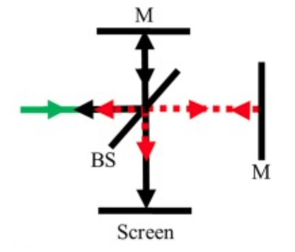
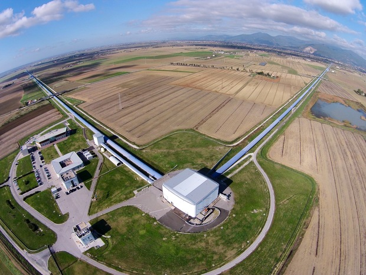
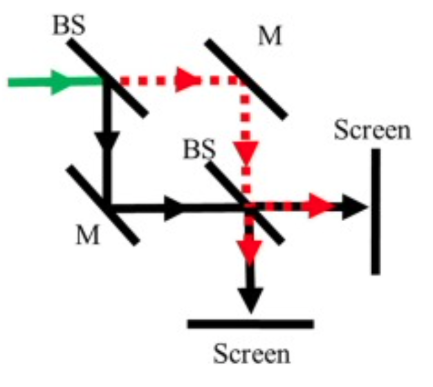
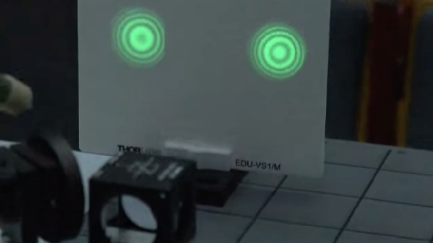
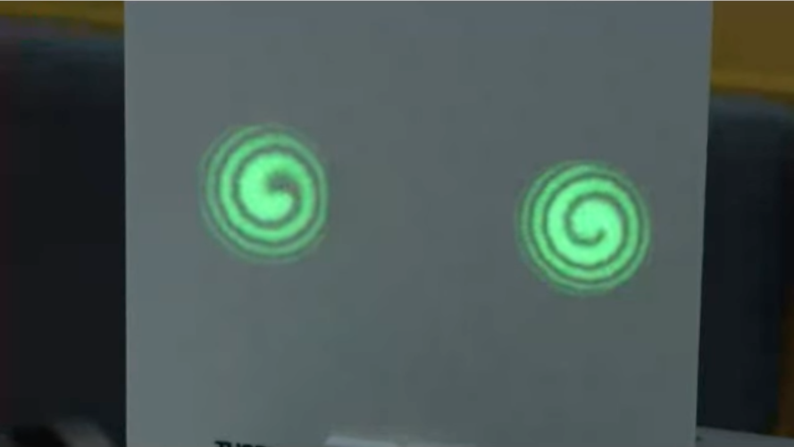
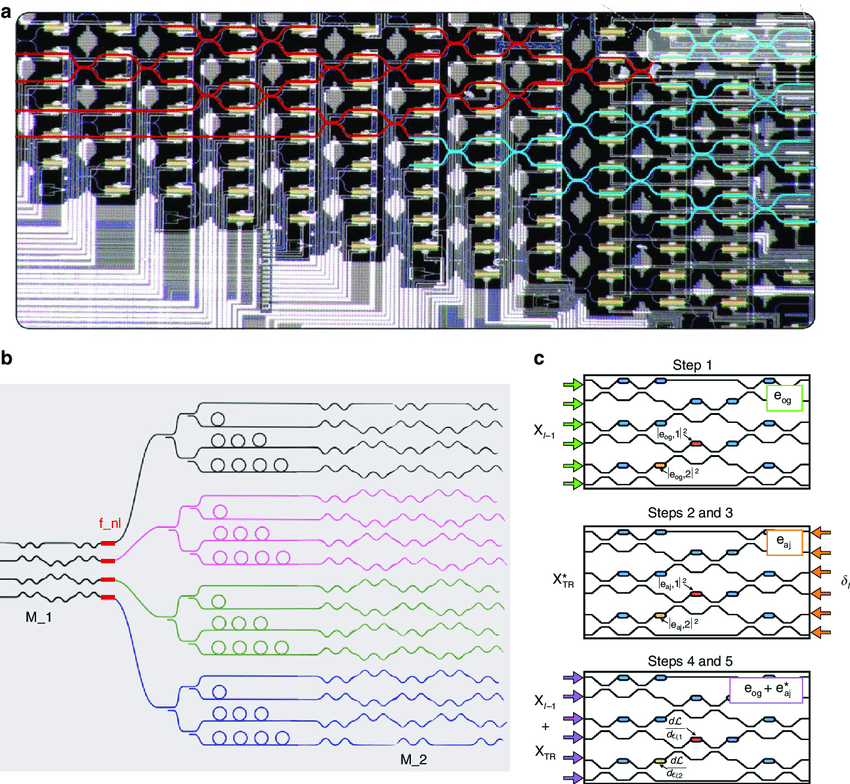
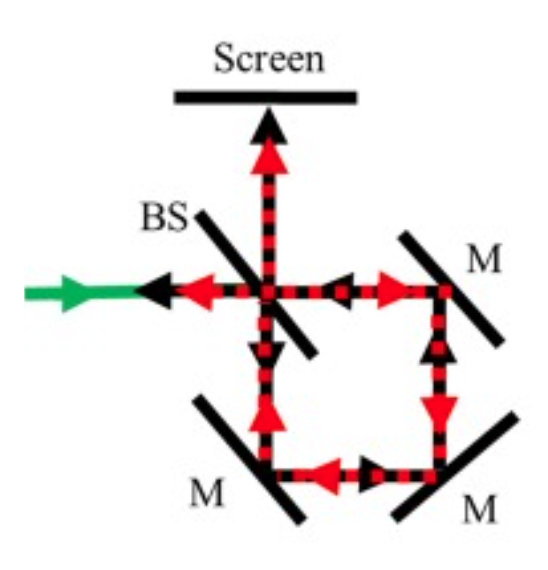
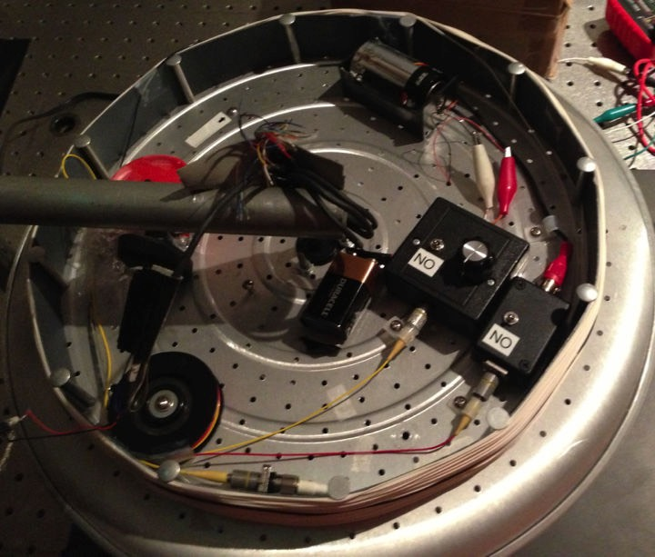

23 Interferometers and other Coherence Applications
23.0.1 Michelson Interferometer
The Michelson interferometer is an essential optical instrument used to measure the interference of light waves. It consists of a coherent light source, such as a laser, which emits a beam directed towards a beam splitter. The beam splitter divides the light into two beams: one reflected towards a fixed mirror and the other transmitted towards a movable mirror. After reflecting off their respective mirrors, the beams are recombined at the beam splitter, where they interfere.

The interference pattern depends on the difference in the optical path lengths of the two beams. Constructive interference occurs when the path lengths are equal or differ by an integer multiple of the wavelength \(\lambda\), given by the condition \(2d = m\lambda\), where \(d\) is the path length difference and \(m\) is an integer. Destructive interference occurs when the path lengths differ by an odd multiple of half the wavelength, given by \(2d = (m + \frac{1}{2})\lambda\).
By adjusting the position of the movable mirror, the path length difference changes, altering the interference pattern. This sensitivity to path length variations makes the Michelson interferometer useful for precise measurements, such as determining the wavelength of light, measuring small distances, and detecting changes in refractive index. It also played a crucial role in the Michelson-Morley experiment, which provided evidence against the existence of the luminiferous ether and supported the theory of special relativity.
23.0.1.1 LIGO Interferometer Overview
The Laser Interferometer Gravitational-Wave Observatory (LIGO) is designed to detect gravitational waves—ripples in spacetime caused by massive accelerating objects, such as merging black holes or neutron stars. LIGO uses a Michelson interferometer configuration with two perpendicular arms, each several kilometers long. A laser beam is split into two beams that travel down these arms, reflect off mirrors at the ends, and then recombine at the beam splitter. Under normal conditions, the lengths of the arms are such that the beams interfere destructively, resulting in no light reaching the detector.

When a gravitational wave passes through the interferometer, it causes a tiny but measurable change in the lengths of the arms. This change alters the interference pattern of the recombined beams, allowing the detection of the gravitational wave. The sensitivity of LIGO is such that it can detect changes in arm length smaller than a thousandth of the diameter of a proton.
The phase shift \(\Delta \phi\) caused by a gravitational wave can be expressed as:
\[ \Delta \phi = \frac{4 \pi \Delta L}{\lambda} \]
where \(\Delta L\) is the change in the length of the interferometer arms due to the gravitational wave, and \(\lambda\) is the wavelength of the laser light used in the interferometer.
23.0.1.1.1 Derivation of the Phase Shift
To understand the phase shift in LIGO, consider the effect of a gravitational wave passing through the interferometer. The wave causes a differential change in the lengths of the two arms, denoted as \(\Delta L\). This change in length affects the travel time of the laser beams in each arm.
The time difference \(\Delta T\) between the beams traveling in the two arms can be expressed as:
\[ \Delta T = \frac{\Delta L}{c} \]
The phase shift \(\Delta \phi\) is then related to this time difference by the equation:
\[ \Delta \phi = \frac{2 \pi \Delta T}{T} = \frac{4 \pi \Delta L}{\lambda} \]
This phase shift alters the interference pattern observed at the detector, allowing LIGO to measure the presence and properties of gravitational waves. The extraordinary precision of LIGO’s measurements enables it to detect incredibly small disturbances in spacetime, providing valuable insights into some of the most energetic events in the universe.
LIGO consists of two large interferometers located in the United States: one in Hanford, Washington, and the other in Livingston, Louisiana. These facilities are operated by the LIGO Scientific Collaboration (LSC), which includes scientists from various institutions around the world. Here is a link to the LIGO website and a direct link to an overview document.
23.0.2 Interferometer Design
- Michelson Interferometer Configuration:
- LIGO uses a Michelson interferometer configuration with 4-kilometer-long arms.
- Each interferometer has two perpendicular arms, forming an “L” shape.
- A laser beam is split into two beams that travel down the arms, reflect off mirrors, and recombine at the beam splitter.
- Fabry-Pérot Cavities:
- Each arm of the interferometer contains a Fabry-Pérot cavity to increase the effective path length of the laser beams.
- The cavities are formed by highly reflective mirrors placed at the ends of the arms.
- The laser beams bounce back and forth multiple times within the cavities, effectively increasing the arm length to several hundred kilometers.
- Laser System:
- LIGO uses a high-power, stabilized laser operating at a wavelength of 1064 nm (infrared).
- The laser power is typically around 200 watts, but the effective power in the interferometer arms is increased to several kilowatts using power recycling techniques.
- Suspension and Isolation:
- The mirrors and other optical components are suspended by a system of pendulums to isolate them from ground vibrations and other noise sources.
- The suspension system includes multiple stages of isolation, including active and passive damping mechanisms.
- Vacuum System:
- The interferometer arms are housed in ultra-high vacuum tubes to eliminate air molecules that could scatter the laser beams and introduce noise.
- The vacuum system maintains a pressure of around \(10^{-9}\) torr.
23.0.3 Detection Principle
- Gravitational Waves:
- Gravitational waves are ripples in spacetime caused by accelerating massive objects, such as merging black holes or neutron stars.
- As a gravitational wave passes through the interferometer, it stretches and compresses the spacetime along the arms, causing tiny changes in the arm lengths.
- Interference Pattern:
- The changes in arm lengths cause a phase shift in the laser beams when they recombine at the beam splitter.
- This phase shift results in a change in the interference pattern, which is detected by photodetectors.
- Sensitivity:
- LIGO is designed to detect changes in arm lengths as small as \(10^{-19}\) meters, which is less than one-thousandth the diameter of a proton.
- The sensitivity is achieved through advanced noise reduction techniques, including seismic isolation, thermal noise reduction, and quantum noise reduction.
23.0.4 Data Analysis
- Signal Processing:
- The data from the photodetectors are processed to identify potential gravitational wave signals.
- Advanced algorithms and computational techniques are used to filter out noise and extract the signals.
- Event Detection:
- When a potential gravitational wave event is detected, the data are analyzed to determine the properties of the source, such as the masses and spins of merging black holes or neutron stars.
- The detection is confirmed by comparing data from both LIGO detectors and, if available, data from other gravitational wave observatories like Virgo.
23.0.5 Mach Zehnder Interferometer
The Mach-Zehnder interferometer is an optical device used to measure phase shifts between two light beams. It consists of a coherent light source, such as a laser, which emits a beam that is split into two paths by a beam splitter. Each beam travels along a different path, encountering mirrors that redirect them towards a second beam splitter where they are recombined. The recombined beams then interfere, producing an interference pattern that can be observed at the output ports.

The interference pattern depends on the phase difference between the two beams, which is influenced by the optical path lengths they travel. If the path lengths are equal, constructive interference occurs, resulting in maximum intensity at one output port and minimum intensity at the other. If the path lengths differ, the phase difference causes a shift in the interference pattern, leading to varying intensities at the output ports.
The phase difference \(\Delta \phi\) between the two beams is given by \(\Delta \phi = \frac{2\pi \Delta L}{\lambda}\), where \(\Delta L\) is the difference in path lengths and \(\lambda\) is the wavelength of the light. By introducing a phase shift in one of the paths, such as by changing the length of the path or altering the refractive index of the medium through which the beam travels, the interference pattern can be controlled and measured.


The Mach-Zehnder interferometer is widely used in applications requiring precise measurements of phase shifts, such as in optical communication systems, quantum mechanics experiments, and the study of optical properties of materials.

23.0.6 Sagnac Interferometer Overview
A Sagnac interferometer operates by splitting a beam of light into two separate beams that travel in opposite directions around a closed loop. These beams are then recombined at the end of the loop, resulting in an interference pattern. If the interferometer is rotating, the path lengths of the two beams differ, leading to a phase shift.

The phase shift, denoted as \(\Delta \phi\), can be calculated using the formula:
\[ \Delta \phi = \frac{8 \pi A \Omega}{\lambda c} \]
where \(A\) represents the area enclosed by the light path, \(\Omega\) is the angular velocity of the rotation, \(\lambda\) is the wavelength of the light, and \(c\) is the speed of light.

23.0.6.1 Derivation of the Phase Shift
To derive the phase shift, we start by considering the path length difference. Assume a loop with a perimeter \(L\) and an area \(A\). In the absence of rotation, the time taken for light to travel around the loop is given by \(T = \frac{L}{c}\).
When the interferometer rotates with an angular velocity \(\Omega\), the effective path length changes. For the beam traveling in the direction of rotation, the path length increases, while for the beam traveling opposite to the direction of rotation, the path length decreases.
The time difference \(\Delta T\) between the two beams can be expressed as:
\[ \Delta T = \frac{4 A \Omega}{c^2} \]
The phase shift \(\Delta \phi\) is related to this time difference by the equation:
\[ \Delta \phi = \frac{2 \pi \Delta T}{T} = \frac{8 \pi A \Omega}{\lambda c} \]
To derive the formula for the time difference \(\Delta T\) between two counter-propagating beams in a Sagnac interferometer, we start by considering a loop of perimeter \(L\) and area \(A\). The interferometer is rotating with an angular velocity \(\Omega\). Light travels in opposite directions around the loop, creating two counter-propagating beams.
In a non-rotating frame, the time taken for light to travel around the loop is \(T = \frac{L}{c}\). When the interferometer rotates with angular velocity \(\Omega\), the effective path lengths for the two beams differ due to the rotation. For the beam traveling in the direction of rotation, the effective path length increases, while for the beam traveling opposite to the direction of rotation, the effective path length decreases.
The relative velocity of light with respect to the rotating frame is \(c \pm v\), where \(v = \Omega R\) is the tangential velocity at the perimeter of the loop. For small angular velocities, we can approximate the effect using the area \(A\) and the angular velocity \(\Omega\).
The time taken for the beam traveling in the direction of rotation is: \[ T_+ = \frac{L}{c + v} \] and the time taken for the beam traveling opposite to the direction of rotation is: \[ T_- = \frac{L}{c - v} \]
For small \(v\), we can use the binomial expansion to approximate the times: \[ T_+ \approx \frac{L}{c} \left(1 - \frac{v}{c}\right) \] \[ T_- \approx \frac{L}{c} \left(1 + \frac{v}{c}\right) \]
The time difference between the two beams is: \[ \Delta T = T_+ - T_- = \frac{L}{c} \left(1 - \frac{v}{c}\right) - \frac{L}{c} \left(1 + \frac{v}{c}\right) \] \[ \Delta T = \frac{L}{c} \left(- \frac{v}{c} - \frac{v}{c}\right) \] \[ \Delta T = -\frac{2Lv}{c^2} \]
The tangential velocity \(v\) is related to the angular velocity \(\Omega\) and the radius \(R\) of the loop: \[ v = \Omega R \]
The area \(A\) of the loop is related to the radius \(R\) and the perimeter \(L\): \[ A = \pi R^2 \]
Combining these, we get: \[ R = \frac{L}{2\pi} \] \[ v = \Omega \frac{L}{2\pi} \]
Substituting \(v = \Omega \frac{L}{2\pi}\) into the expression for \(\Delta T\): \[ \Delta T = -\frac{2L \left(\Omega \frac{L}{2\pi}\right)}{c^2} \] \[ \Delta T = -\frac{2L^2 \Omega}{2\pi c^2} \] \[ \Delta T = -\frac{L^2 \Omega}{\pi c^2} \]
Using the relationship \(L^2 = 4A\), we get: \[ L^2 = 4A \]
Substituting \(L^2 = 4A\) into the expression for \(\Delta T\): \[ \Delta T = -\frac{4A \Omega}{c^2} \]
Since the time difference \(\Delta T\) is typically considered in magnitude, we take the absolute value: \[ \Delta T = \frac{4 A \Omega}{c^2} \]